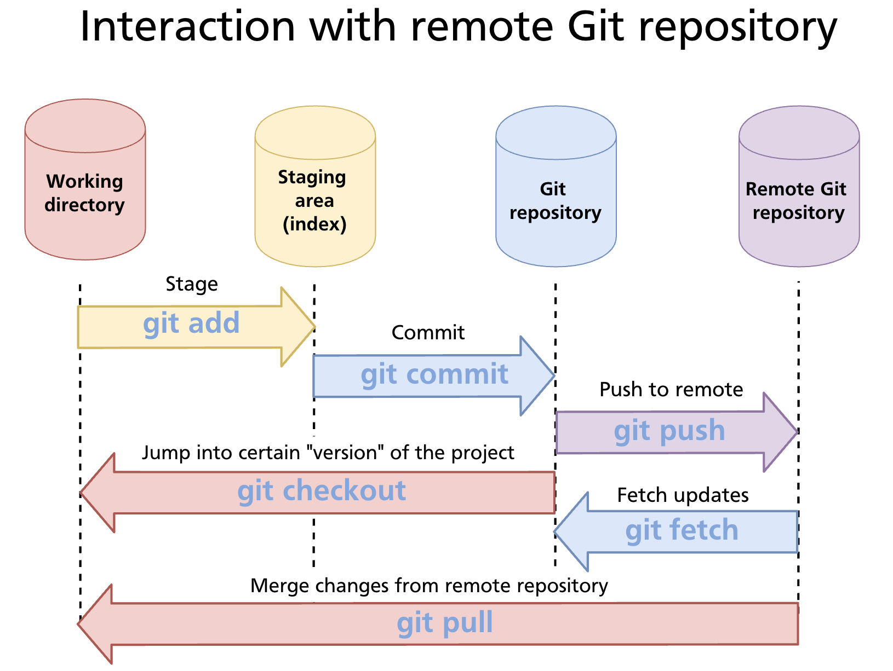
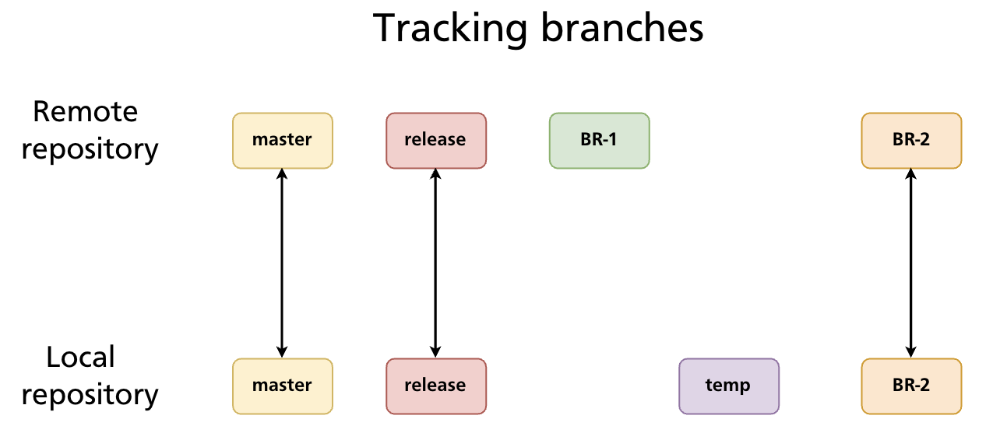
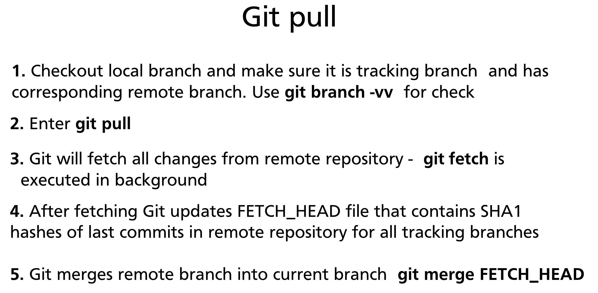
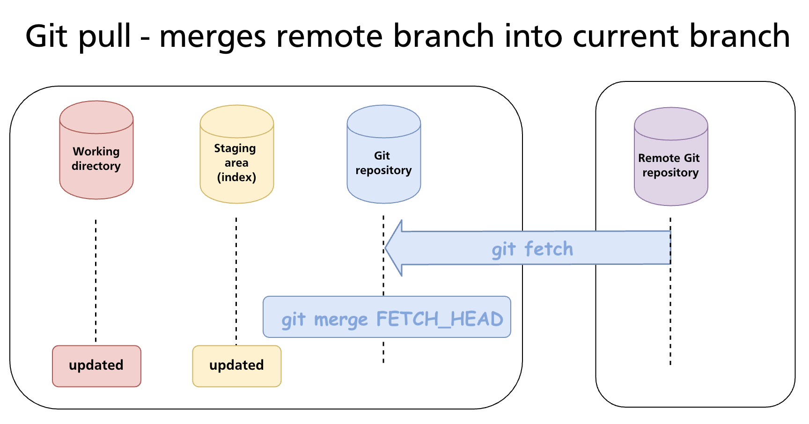
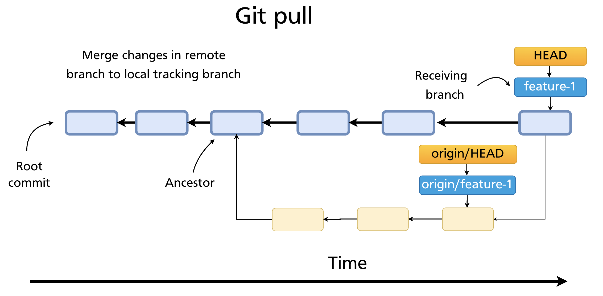
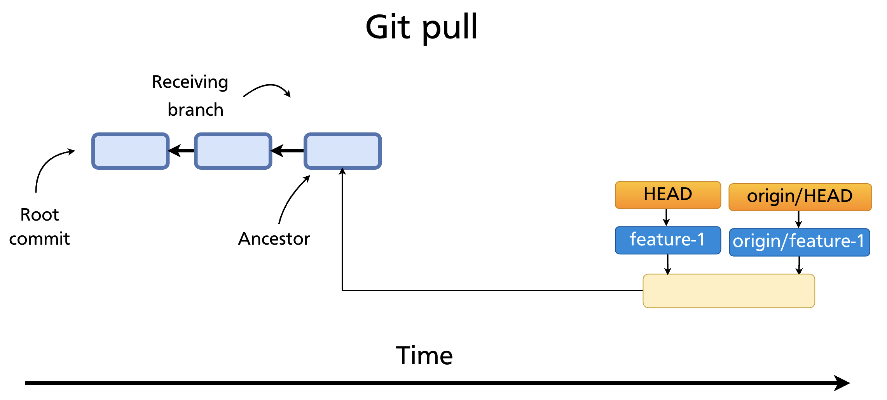
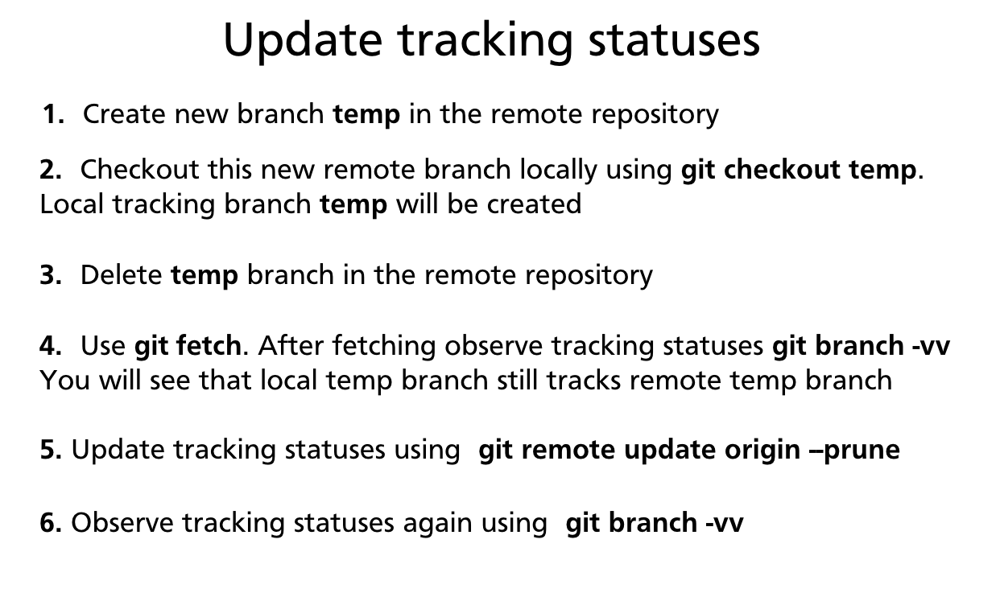

Chapter 18 — Push, Fetch & Pull
With a remote repository set up (Chapter 17), three commands handle all synchronisation between local and remote: git push sends your commits up, git fetch downloads remote changes without touching your working directory, and git pull downloads and integrates them in one step. Understanding the difference between fetch and pull — and when to prefer one over the other — is essential for working safely on shared repositories.
The Three Sync Commands at a Glance

| Command | Direction | Integrates into working branch? |
|---|---|---|
git push |
Local → Remote | N/A (sends your commits out) |
git fetch |
Remote → Local | No — updates remote-tracking branches only |
git pull |
Remote → Local | Yes — fetch + merge (or rebase) |
git push — Sending Commits to the Remote
git push uploads your local commits to the remote repository, advancing the remote branch pointer to match your local branch.
This pushes the local main branch to origin. If the remote branch does not exist yet, Git creates it.
Setting an upstream tracking relationship
The first time you push a new branch, use -u (--set-upstream) to link the local branch to its remote counterpart:
After that, git push and git pull on that branch need no arguments — Git knows where to send and receive.
Pushing all branches / all tags
git push --all origin # push every local branch
git push --follow-tags # push commits + reachable annotated tags (recommended)
git push --tags # push all tags (use sparingly — includes lightweight tags)
When a push is rejected
If the remote branch has commits your local branch does not have, Git refuses the push:
! [rejected] main -> main (fetch first)
error: failed to push some refs to 'git@github.com:alice/repo.git'
hint: Updates were rejected because the remote contains work that you do
hint: not have locally. Merge the remote changes (e.g. 'git pull') before pushing again.
The fix is to fetch the remote work, integrate it, and then push:
Force push — when history has been rewritten
After an interactive rebase or git commit --amend on a pushed branch, the local and remote histories diverge. A normal push is rejected. You can override with --force:
Warning:
--forceoverwrites the remote branch with your local history. Any commits on the remote that aren't in your local history are discarded. Never force-push tomain,master, or any shared branch without explicit team agreement.
A safer alternative is --force-with-lease, which refuses the force-push if the remote has been updated by someone else since you last fetched:
This prevents accidentally overwriting a teammate's commits.
git fetch — Downloading Without Integrating
git fetch contacts the remote and downloads any new commits, branches, and tags — but it only updates remote-tracking branches (origin/main, origin/feature-x, etc.). Your local branches and working directory are untouched.
git fetch origin # fetch from the named remote
git fetch # fetch from the default remote (origin)
git fetch --all # fetch from all configured remotes

After fetching, you can inspect what changed before deciding whether to merge:
git log origin/main --oneline # see commits on the remote not yet local
git diff main origin/main # diff between your branch and the remote
git log main..origin/main # commits in origin/main that aren't in main
To integrate after inspecting:
git merge origin/main # merge the remote changes into local main
# or
git rebase origin/main # rebase local main on top of remote changes
git fetch is the safer daily habit on shared branches — you see what's coming before it lands in your working branch.
Tracking Branches
A tracking branch (also called an upstream branch) is a local branch that has a configured relationship with a remote branch. Git uses this relationship to know where to push and pull without you having to specify the remote and branch name every time.

Set the upstream when pushing:
Or set it explicitly without pushing:
Check tracking relationships:
git branch -vv
# * main a3f8c21 [origin/main] Add login form
# feature-auth 7b9d344 [origin/feature-auth: ahead 2] Add token refresh
# dev c1e0f52 [origin/dev: behind 3] Merge hotfix
ahead N— your local branch has N commits not yet pushedbehind N— the remote has N commits you haven't pulled yetahead M, behind N— branches have diverged; you need to pull before pushing
git pull — Fetch and Integrate in One Step
git pull is a shortcut that runs git fetch followed by git merge FETCH_HEAD — fetching the remote branch and immediately merging it into the current local branch.

git pull # pull from tracked remote branch (upstream must be set)
git pull origin main # explicit: fetch origin, merge origin/main into current branch
What git pull actually does internally
- Checks out the local branch and verifies it has a tracking relationship (
git branch -vv) - Runs
git fetch— downloads new objects and updatesorigin/<branch> - Updates
FETCH_HEADwith the SHA of the latest remote commit - Runs
git merge FETCH_HEAD— merges the remote branch into the current local branch


Pull with rebase
Instead of creating a merge commit, you can rebase your local commits on top of the remote's changes:
This produces a cleaner linear history when you have local commits that haven't been pushed yet. Many teams configure this as the default:
Pull conflicts
If the incoming remote changes conflict with your local uncommitted work, Git will stop and ask you to resolve them — the same conflict-marker workflow as git merge (Chapter 12).
If you have uncommitted local changes that conflict, Git may refuse to pull at all:
error: Your local changes to the following files would be overwritten by merge:
src/auth.js
Please commit your changes or stash them before you merge.
Stash first (Chapter 9), then pull:
Pruning Stale Remote-Tracking Branches
When a remote branch is deleted (e.g. after a pull request is merged), your local remote-tracking reference (origin/<branch>) is not automatically removed. Over time these accumulate as stale entries.

Prune during a fetch:
Prune without fetching:
Make pruning automatic on every fetch:
Note: Pruning only removes remote-tracking references (
origin/branch-name). Your local branches are never deleted automatically — you must delete them manually withgit branch -d.
Summary
git pushsends local commits to the remote. Use-uon first push to set the upstream. Use--force-with-leaseinstead of--forcewhen rewriting pushed history.git fetchdownloads remote changes and updates remote-tracking branches without touching your local branches or working directory — safe to run at any time.git pull=git fetch+git merge. Use--rebaseto avoid merge commits when integrating remote changes into a local branch with unpushed commits.- A tracking branch links a local branch to a remote branch so
git push/git pullneed no arguments. Set withgit push -uorgit branch -u. git branch -vvshows tracking relationships and ahead/behind counts.- Prune stale remote-tracking branches with
git fetch --pruneorgit config --global fetch.prune true.
Previous: Chapter 17 — GitHub Overview & Remote Repositories · Next: Chapter 19 — Forks & Contributing to Open Source